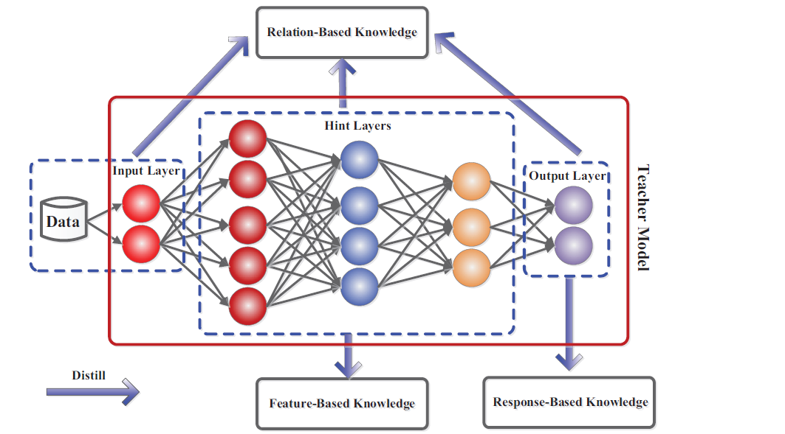

Knowledge Distillation
Knowledge Distillation: Simplifying Deep Learning Models
In the world of AI and deep learning, bigger models usually mean better performance. These models, often referred to as deep neural networks (DNNs), have taken artificial intelligence to new heights by achieving remarkable success in computer vision, natural language processing (NLP), and other domains. However, their sheer size and complexity pose significant challenges when it comes to deploying them on devices with limited resources, such as mobile phones and embedded systems. Enter knowledge distillation, an efficient solution to compress large models into smaller, faster, and more resource-friendly versions without compromising accuracy.
What is Knowledge Distillation?
At its core, knowledge distillation (KD) is a technique used to transfer the knowledge from a large model (referred to as the teacher model) into a smaller model (the student model). The primary objective is to reduce the size of the deep neural network while maintaining a similar level of performance. This method has become increasingly popular in the AI community, as it offers a way to bring complex models to devices with limited computational power. The concept of KD was popularized by Hinton et al. in 2015. The idea is that instead of training a small model from scratch, it can be trained to mimic the outputs of a large model, allowing the student model to learn more efficiently and effectively. By doing so, the student model not only compresses the size of the neural network but also retains much of the functionality of the larger teacher model.
How Does Knowledge Distillation Work?
The process of knowledge distillation generally involves three components:
The Teacher Model: This is the pre-trained, large neural network that has high accuracy but is computationally expensive.
The Student Model: This smaller model aims to replicate the performance of the teacher model while being more efficient in terms of memory and speed.
Distillation Process: The student model learns by mimicking the teacher’s outputs. The goal is to make the student model as accurate as possible, often by using a special loss function that helps it learn from the teacher’s “soft predictions” (or probability outputs) rather than the hard, ground-truth labels.
In a typical KD scenario, the teacher model is first trained on a dataset. Then, during the distillation phase, the student model is trained not only using the true labels of the dataset but also by trying to match the teacher’s outputs. These outputs often include subtle patterns and relationships in the data that the teacher has learned, which help guide the student model towards better generalization and accuracy.
Types of Knowledge in Distillation
The knowledge that the student model learns from the teacher can come in various forms. These include:

Response-Based Knowledge: This refers to the outputs or predictions made by the teacher model. The student model learns by mimicking the probability distribution of the teacher’s predictions, often referred to as “soft labels.”
Feature-Based Knowledge: Instead of just learning from the final outputs, the student model can also learn from the intermediate representations, or feature maps, generated by the teacher. This helps the student model capture more fine-grained information about the data.
Relation-Based Knowledge: In some cases, the relationships between different samples or features are used to guide the student model. This could involve learning the similarities and differences between pairs of data points or understanding how various features interact.
Each of these methods provides unique benefits, and depending on the use case, one might be more suitable than the others.
Distillation Schemes: Offline, Online, and Self-Distillation
There are several strategies to perform knowledge distillation, each offering different advantages:
Offline Distillation: This is the most common method, where the teacher model is pre-trained and remains fixed during the distillation process. The student model learns from this static teacher, making the process simple and easy to implement.
Online Distillation: In this scheme, both the teacher and the student models are trained simultaneously. This is useful when a high-performance teacher model is not available from the start, allowing the two models to evolve together during training.
Self-Distillation: In this variant, the teacher and the student are essentially the same model. Different parts of the model (for example, deeper layers) act as the teacher to guide earlier layers (the student). This strategy has been shown to improve performance even within a single network.

Knowledge Distillation Algorithms
Knowledge distillation (KD) has revolutionized the process of model compression. This process enables lightweight models to perform complex tasks while retaining most of the teacher’s capabilities. Over time, numerous specialized distillation algorithms have been developed, each designed to address specific challenges or make distillation more effective. A number of prominent KD algorithms are explored in this section, along with their unique approaches and applications.
1. Adversarial Knowledge Distillation
Adversarial KD combines the principles of Generative Adversarial Networks (GANs) with distillation to refine how student models mimic teachers. Here, a generator-discriminator dynamic is introduced where the student model acts as a generator trying to fool a discriminator into thinking its outputs are from the teacher.
Key Characteristics:
- Synthetic Data Generation: A GAN generates synthetic data that aids the student in understanding complex data distributions. This data either supplements or entirely replaces the training dataset.
- Discriminative Supervision: The student model is trained against a discriminator that distinguishes between teacher and student outputs, ensuring the student closely mimics the teacher.
2. Multi-Teacher Knowledge Distillation
In Multi-Teacher KD, a student model learns from multiple teachers rather than a single one, each offering distinct knowledge or expertise. This approach is useful when the teachers are trained on different datasets or specialize in different aspects of a task.
Key Characteristics:
- Averaged Response: The simplest implementation involves averaging the outputs from multiple teachers, allowing the student to benefit from diverse viewpoints.
- Feature and Logit Transfer: Some implementations utilize both logits and intermediate feature maps from various teachers to provide the student with a comprehensive understanding of the task.
This method is beneficial in situations like object detection, where combining multiple expert models can improve the student’s performance across diverse categories.
3. Cross-Modal Knowledge Distillation
Cross-Modal KD enables knowledge transfer between models trained on different modalities (e.g., vision, text, or audio). For example, a teacher model trained on RGB images can transfer its knowledge to a student model working with depth images.
Key Characteristics:
- Paired Modality Learning: Often, paired data (e.g., RGB and depth images) is used, where knowledge learned by the teacher in one modality guides the student’s learning in another modality.
- Hallucination Streams: In some cases, a hallucination stream is generated for a missing modality, such as generating depth features from RGB inputs to guide the student.
This technique is ideal for scenarios where data from one modality is scarce, such as human pose estimation using radio frequency signals paired with RGB video inputs.
4. Graph-Based Knowledge Distillation
Graph-Based KD models knowledge as a graph, where vertices represent data instances or features, and edges capture relationships between them. This allows the student model to learn not only from individual outputs but also from the relationships between data points.
Key Characteristics:
- Intra-Data Relations: The student learns from graphs that represent relationships between data points, such as the similarity between features or mutual relations.
- Graph Construction: Graphs can be built from logits, feature maps, or even a combination of the two, allowing for a rich transfer of relational knowledge.
This method excels in applications requiring an understanding of complex data structures, such as social network analysis or recommender systems, where the relationships between data points are as important as the points themselves.
5. Attention-Based Knowledge Distillation
Attention-Based KD leverages attention mechanisms within the teacher model to highlight important features, which are then transferred to the student. Attention maps, which indicate which parts of the input are most important, guide the student in focusing on critical aspects of the data.
Key Characteristics:
- Attention Maps: The student model is trained to replicate the attention maps of the teacher, learning to focus on the same areas of the input data.
- Confidence Assignment: Some methods also use attention mechanisms to assign different confidence levels to various parts of the data, ensuring the student model prioritizes the right features.
This approach is especially useful in image classification and object detection, where attention maps can guide the student in focusing on specific regions of an image.
6. Data-Free Knowledge Distillation
In Data-Free KD, the student model is trained without access to the original training data. This is often necessary in situations where the data is sensitive, such as in healthcare or legal domains.
Key Characteristics:
- Synthetic Data Generation: Techniques like GANs or layer activations are used to generate synthetic data that mimics the original dataset, which is then used to train the student model.
- Unlabeled Knowledge Transfer: In some cases, the student learns by replicating the teacher’s outputs without any real data.
This method is crucial when data privacy is a concern, such as in medical AI applications, where access to patient data may be restricted.
7. Quantized Knowledge Distillation
Quantized KD deals with converting teacher models into low-precision student models (such as 8-bit or 4-bit representations) without losing significant accuracy. This helps in deploying models on resource-constrained devices.
Key Characteristics:
- Precision Reduction: The weights and activations of the student model are reduced in precision, making it more efficient for inference on edge devices.
- Loss Minimization: Techniques are employed to minimize the loss in performance due to quantization.
This method is widely used in deploying AI models on mobile devices and embedded systems, where computational and memory resources are limited.
8. Lifelong Knowledge Distillation
Lifelong KD aims to continually update the student model as new tasks or data are introduced, allowing it to learn from the teacher while preserving its knowledge of previous tasks. This is a crucial aspect of lifelong learning in AI.
Key Characteristics:
- Task Preservation: The student model is designed to retain knowledge from previous tasks while learning new ones, reducing the risk of catastrophic forgetting.
- Continuous Learning: New knowledge is distilled incrementally, making the student adaptive to evolving data.
Lifelong KD is important in applications like autonomous driving, where the model needs to adapt to new environments without forgetting previously learned knowledge.
9. NAS-Based Knowledge Distillation
Neural Architecture Search (NAS)-Based KD integrates NAS into the distillation process, automating the search for the optimal student architecture under the guidance of the teacher model. This approach aims to find the best possible student model structure through data-driven optimization.
Key Characteristics:
- Automated Architecture Search: NAS methods search for an efficient student model architecture that best matches the teacher’s performance.
- Reinforcement Learning: Some NAS-based KD methods use reinforcement learning to dynamically search for and prune unnecessary layers in the student model .
This method is highly useful in optimizing model performance across a variety of applications, including speech recognition and natural language processing.
Applications of Knowledge Distillation
Knowledge distillation has found applications across various domains of artificial intelligence:
Visual Recognition: Distilled models are widely used in tasks such as image classification, object detection, and human pose estimation. Smaller models are crucial for deployment on devices with limited computational power, such as smartphones or embedded cameras.
Natural Language Processing (NLP): The success of models like BERT and GPT has revolutionized NLP, but their massive size makes them impractical for real-time applications. Distilled versions of these models have been created to retain their impressive performance while being small enough for deployment in resource-constrained environments.
Speech Recognition: Similar to other AI tasks, large models can achieve great accuracy in speech recognition, but distilled models enable their use in real-time applications like virtual assistants, where speed and memory are critical.
Challenges and Future Directions
While knowledge distillation is a promising approach to compressing deep learning models, it still faces several challenges:
Model Capacity Gap: If the student model is too small compared to the teacher, it may struggle to capture all the necessary knowledge, leading to a performance drop. Researchers are exploring ways to bridge this gap, such as introducing intermediate “assistant” models to facilitate the transfer of knowledge.
Adversarial Distillation: Incorporating adversarial learning into distillation, where a student model learns to fool a discriminator into thinking its outputs come from the teacher, is an emerging area that could improve the effectiveness of KD in complex tasks.
Cross-Modal Distillation: Transferring knowledge between different modalities (e.g., from images to text or sound) is another exciting frontier that could open up new applications, especially in multi-modal AI systems.
Conclusion
The evolving landscape of knowledge distillation has given rise to a diverse set of algorithms, each designed to tackle specific challenges. From adversarial techniques and multi-teacher models to cross-modal transfers and lifelong learning, these algorithms make it possible to compress complex deep learning models without compromising on accuracy. As AI continues to move towards more resource-efficient solutions, these distillation methods will be crucial in enabling powerful models to run on everyday devices.
Knowledge distillation is a powerful tool for reducing the size of deep neural networks while maintaining their accuracy. As AI continues to advance, this technique will play a crucial role in making sophisticated models accessible on everyday devices. With ongoing research addressing current challenges, knowledge distillation is poised to become a foundational technique in the future of AI and machine learning.
FasterAI: Revolutionizing AI Speed and Efficiency
In today’s world, where artificial intelligence (AI) is reshaping industries, there’s a growing demand for AI models that not only deliver powerful results but also run efficiently on everyday devices. Enter FasterAI, a groundbreaking framework designed to accelerate AI models without compromising their performance. From mobile phones to cloud servers, FasterAI makes it easier to deploy cutting-edge AI solutions in real-time applications, all while saving memory, computation, and energy.
FasterAI uses advanced techniques such as model compression, knowledge distillation, and neural architecture search (NAS) to create lightweight models that perform with the same accuracy as their larger counterparts. Whether you’re a developer working on AI for mobile devices or a researcher trying to deploy models on resource-limited hardware, FasterAI provides the tools to make your AI faster, smarter, and more efficient.
The Need for Faster AI
AI models, especially deep learning models, are known for their ability to handle large-scale data and solve complex tasks. However, this power comes at a cost—many AI models are large, computationally intensive, and require significant memory and energy. As AI becomes increasingly integrated into real-time applications like autonomous driving, healthcare, mobile applications, and edge computing, deploying massive models on devices with limited resources becomes a significant challenge.
For example: - Mobile applications need AI models that can run quickly and efficiently on smartphones with limited memory and processing power. - Edge computing devices, like IoT sensors and cameras, require lightweight AI models that deliver real-time results without relying on powerful cloud servers. - Autonomous vehicles depend on fast, real-time decision-making AI models that must run efficiently without draining the battery or overloading the hardware.
To meet these growing demands, FasterAI offers a comprehensive solution that makes AI models more accessible, efficient, and ready for deployment across various platforms.
How FasterAI Works
FasterAI streamlines the development and deployment of AI models using several advanced techniques. Here’s how it works:
1. Model Compression
Model compression is a critical technique for reducing the size of deep learning models while retaining their accuracy. FasterAI uses compression techniques such as pruning, quantization, and weight sharing to shrink the model’s size and make it faster.
- Pruning: This process removes unnecessary weights and neurons from a neural network, reducing the model’s complexity without affecting performance.
- Quantization: By converting high-precision models (e.g., 32-bit floating point) into lower precision (e.g., 8-bit or 4-bit models), FasterAI drastically reduces the memory footprint while keeping the model’s accuracy intact.
- Weight Sharing: FasterAI identifies and merges similar weights in the model, allowing it to run more efficiently.
With these techniques, FasterAI reduces both the storage and computational costs of deploying large models on smaller devices.
2. Knowledge Distillation
Knowledge distillation is a process where a large, complex AI model (the teacher) transfers its knowledge to a smaller model (the student). The student model is trained to mimic the behavior of the teacher, delivering similar performance while being much smaller and faster.
FasterAI uses knowledge distillation to: - Shrink models: Student models are much smaller in size compared to teacher models but retain nearly the same level of performance. - Improve efficiency: Distilled models are optimized for faster inference, making them ideal for real-time applications. - Ensure accuracy: Despite the reduction in size, FasterAI ensures that the smaller models maintain high accuracy, allowing them to be used in mission-critical applications.
3. Neural Architecture Search (NAS)
Neural Architecture Search (NAS) is a technique that automates the process of designing AI models. Instead of manually choosing the architecture of a neural network, FasterAI uses NAS to explore different architectures and find the most efficient model for a specific task.
- Automated Search: NAS automatically searches for the optimal model structure, balancing speed and accuracy.
- Customized Models: FasterAI tailors models to specific hardware requirements, ensuring that AI applications can run smoothly across different platforms—whether it’s a cloud server or an embedded device.
- Task-Specific Optimization: With NAS, FasterAI generates models that are highly optimized for particular tasks, ensuring maximum performance and minimal resource usage.
This approach enables FasterAI to create models that are both high-performing and efficient, with minimal human intervention.
Why Choose FasterAI?
FasterAI is not just another AI framework—it’s a comprehensive solution designed to tackle the growing demand for faster, more efficient AI models. Here’s why FasterAI stands out:
1. Real-Time AI
FasterAI is built to support real-time applications that require immediate processing, such as autonomous vehicles, facial recognition, and augmented reality. By optimizing models for speed, FasterAI ensures low-latency performance, allowing AI models to run in real time without lag.
2. Cross-Platform Deployment
With FasterAI, AI models can be easily deployed across various platforms—from cloud servers and desktops to mobile devices and edge hardware. Whether you’re working on a mobile app or an IoT project, FasterAI ensures that your models run smoothly, regardless of the hardware limitations.
3. Scalability
As businesses scale, so do their AI needs. FasterAI provides a scalable solution by making it easy to deploy models on a wide range of devices. From small-scale projects to large enterprise applications, FasterAI enables seamless scaling without the need for complex retraining or re-engineering.
4. Energy Efficiency
In scenarios where power consumption is a major concern (e.g., edge computing, battery-operated devices), FasterAI optimizes models to use less energy while maintaining high performance. This is especially important for applications like wearable technology or smart home devices.
5. Enhanced User Experience
FasterAI enables AI models to deliver results faster, enhancing user experiences in applications that rely on AI for real-time feedback. Whether it’s a voice assistant responding instantly or an app that processes images in a fraction of a second, FasterAI ensures your AI enhances, not hinders, user experience.
Applications of FasterAI
FasterAI can be applied across various industries, making AI faster and more accessible in real-world scenarios:
- Healthcare: FasterAI compresses complex diagnostic models, enabling them to run on portable devices in hospitals, improving patient care without needing bulky hardware.
- Autonomous Driving: In autonomous vehicles, FasterAI ensures that AI models can make quick, real-time decisions while conserving battery life and reducing hardware demands.
- Retail: FasterAI powers AI-driven recommendation systems and customer service bots in real-time, enhancing the shopping experience for customers and driving more sales.
- Smart Devices: From smartwatches to smart speakers, FasterAI makes AI possible on devices with limited computing power, allowing real-time AI-driven features like voice recognition and activity tracking.
- Finance: In banking and financial services, FasterAI optimizes AI models used for fraud detection and algorithmic trading, ensuring they run efficiently with minimal delay.
Conclusion
In an era where AI is becoming indispensable in our daily lives, FasterAI is the solution that bridges the gap between cutting-edge AI capabilities and the practical need for speed, efficiency, and scalability. By leveraging advanced techniques like model compression, knowledge distillation, and neural architecture search, FasterAI delivers fast, efficient AI models that are easy to deploy across a wide range of devices.
Whether you’re developing mobile apps, working on IoT solutions, or deploying large-scale AI systems, FasterAI offers the tools to make AI work smarter, faster, and more efficiently—paving the way for the future of AI-powered innovation.
References
https://github.com/Jingnan-Jia/Awesome-Knowledge-Distillation
https://arxiv.org/pdf/2006.05525